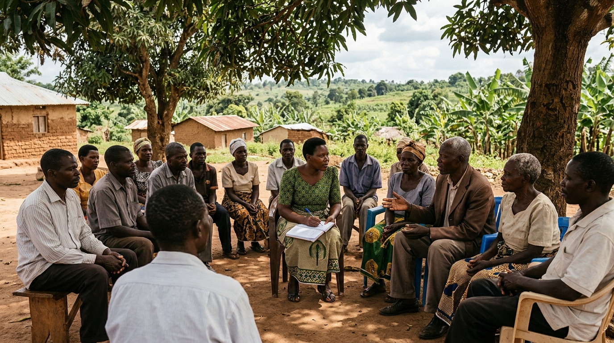

Linking Ability to Opportunity
AbilityLink Impact Hub (ALIH) is a community-oriented organisation being developed to connect underserved children, families and communities with education, protection, skills, resources and opportunities.
We believe communities should not be approached with solutions based on assumptions.
ALIH is currently building its institutional foundation and gathering evidence about communities, existing services, local initiatives and practical gaps before deciding where and how to intervene.

Long-Term Perspective
Building an institution designed to create lasting value far beyond individual projects or funding cycles.
Listening Over Presumption
Engaging households and local elders directly to understand realities before crafting any intervention.
Non-Duplication Principle
Strengthening what already exists, collaborating with local partners, and intervening only where genuine gaps lie.
“What can we build today that will still be serving people when we are no longer the ones running it?”
This question anchors every policy, research inquiry, pilot intervention, and partnership formed at ALIH. It rejects the temporary mentality of short-term project delivery and demands institutional durability, community ownership, and leadership succession from the very beginning.
Sustainability
Designing systems and operating models that outlast outside dependencies.
Community Ownership
Ensuring local families and leaders directly shape and steer solutions.
Leadership Transfer
Cultivating local institutional leadership capable of managing future growth.
Institutional Systems
Creating robust, accountable organizational governance that works reliably.
Explore AbilityLink Impact Hub
Navigate through our institutional foundations, operating methodology, strategic areas, geographic footprint, and collaborative partnerships.
Who We Are & Values
Our vision, mission, long-term institutional approach, 10 governing values, and commitment to building more than temporary projects.
Our 8-Step Approach
We Listen Before We Act: The interactive continuum from household consultation to evidence-based adaptation under "Evidence before expansion."
Six Strategic Areas
Education, Girls' Protection, Youth Skills, Family Resilience, Community Hub, and the prominent School Decision Framework.
Where We Work & Stage
Kikuube District, Kyangwali Subcounty, understanding Host vs Refugee dynamics, and our 6 active Foundation Stage workstreams.
Community & Partnerships
Our collaborative framework across 11 stakeholder groups under the principle of non-duplication and mutual value creation.
Partner With ALIH
Ten partnership tracks spanning technical expertise, education, research, funding, and child protection. Direct contact and intake form.